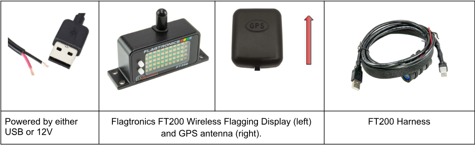
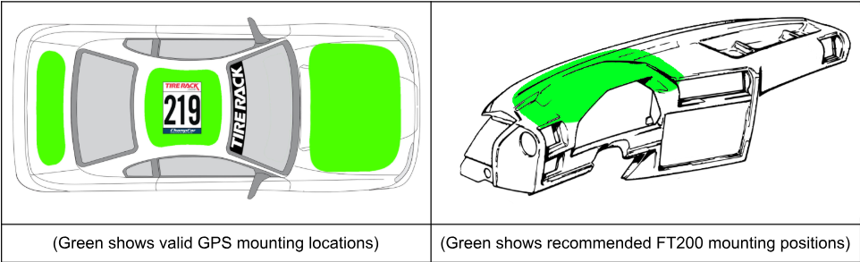

Mounting & Connection Recommendations
For maximum performance, we recommend the FT200 be connected to 12V power via flying leads or a USB adapter (Type A plug) capable of 10W (5V 2A) or more. Lower power chargers will result in lower screen brightness or improper function.
The FT200 unit should be mounted horizontally within the driver’s direct view or immediate periphery.
The FT200 is a safety device and should be highly visible to the driver. We recommend positioning the display above the gauge cluster or center panel in a way that remains in the driver’s direct view or immediate periphery. The top of the FT200 has an antenna which should maintain a clear line of sight through the window openings of the vehicle.
The GPS antenna should be placed on one of the valid mounting locations shown, 6” away from any edges and 6” away from other antennas. The GPS is directional and the rear, where the wire exits, should point to the rear of the
